Cada bajada,
contada.
Velocidad, desnivel y cada bajada de tu día de esquí, en el iPhone y el Apple Watch.
Próximamente en el App Store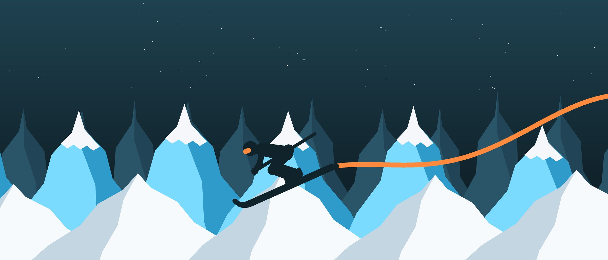
Cada bajada, al momento.
Pulsa «Empezar» y olvídate. SnowTracker separa solo las bajadas de los remontes y te dice en cuál vas, a qué velocidad, cuánto has bajado y la inclinación de la pista. Con el iPhone bloqueado, la sesión sigue en la pantalla de bloqueo, con Pausar a mano.
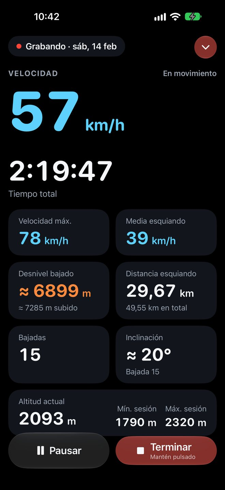
Tu día entero, en el mapa.
La ruta del día, coloreada por velocidad sobre los mapas de Apple, con cada bajada numerada. Toca una y el mapa la encuadra sola. Y si quieres revivirla, reprodúcela hasta 60 veces más rápido.
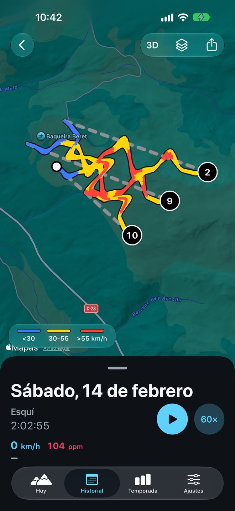
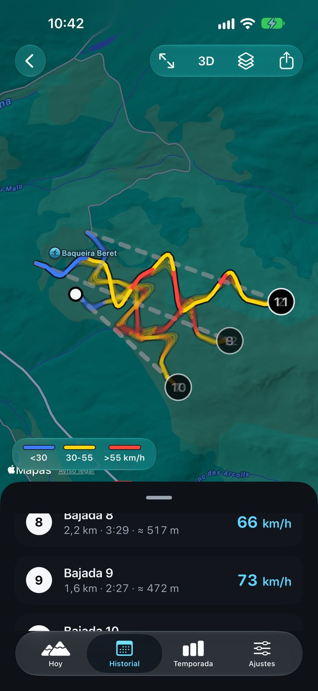
Todo el día, de un vistazo.
Velocidad máxima y media, desnivel, distancia esquiando y en remontes, cada bajada con su velocidad y el perfil de altitud del día. Ordena las bajadas por número o por velocidad.
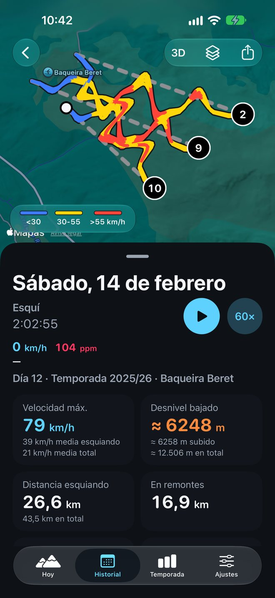
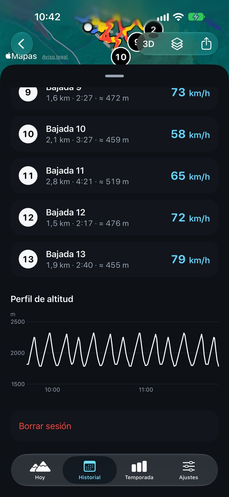
Sabe en qué estación estás.
Al abrir la app, Hoy te dice en qué estación estás, lo que llevas en el día o, si hoy no has esquiado, tu último día: bajadas, desnivel, velocidad máxima y, con Apple Watch, pulso y kcal. Elige esquí, snowboard o telemark y empieza.
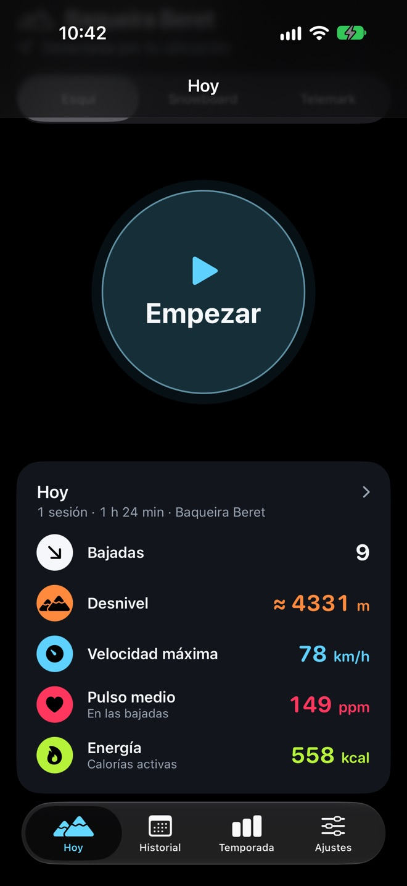
Cada metro cuenta.
Días, bajadas, kilómetros y el desnivel acumulado de toda la temporada, comparado con la anterior. Tus récords, con el día y la estación de cada uno, y todas las estaciones donde has esquiado.
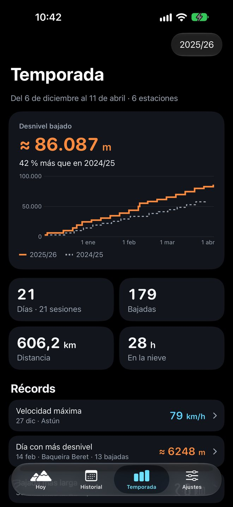
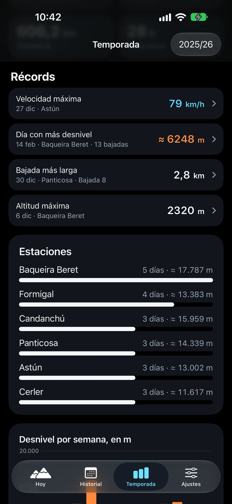
Tú esquías, el reloj apunta.
Empieza en el iPhone y llévalo en el bolsillo. En la muñeca ves la bajada en la que vas, la velocidad, el pulso y el desnivel, y pausas o bloqueas la pantalla desde la muñeca. El pulso y las kcal de cada día quedan en su resumen.
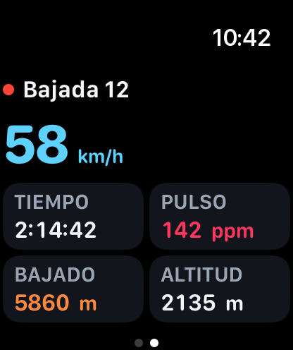
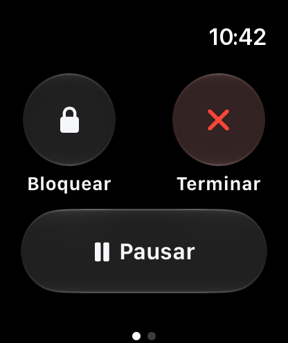
Pensada para la montaña.
En la pantalla de bloqueo
La sesión en una actividad en vivo, con la bajada, la velocidad y el tiempo, y Pausar sin abrir la app.
Nunca pierdes una sesión
Si la app se cierra o el iPhone se apaga, la sesión se recupera al volver. Y te avisa cuando queda poca batería.
Guarda en Salud
Cada día, como entrenamiento en la app Salud, con la ruta y, con el reloj, el pulso y las kcal.
Comparte la ruta
Exporta la ruta de cualquier día en GPX para llevarla a otras apps.
Esquí, snowboard o telemark
Elige tu actividad; las cifras se miden igual.
Tus unidades
Kilómetros o millas, metros o pies, según tu región, y VoiceOver lee cada cifra con su unidad.
Tus datos, en tu iPhone.
SnowTracker no tiene cuentas ni servidores propios. Tus sesiones se guardan en tu dispositivo y nadie más las ve.